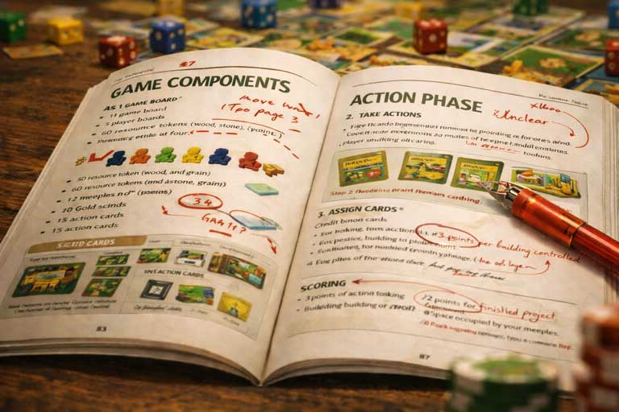

The Biggest Problem In Board Game Rulebook Design
So you've written the entire rulebook. You've put in the hours. You've dotted your i's, crossed your t's, but...somehow, your testers are still struggling to grasp your game.
How could that be? It's all right there on the page, just like every other rulebook you've ever read. … What gives?!

The Usual Suspects:
There are a number of well-known heuristics that you'll hear repeated when learning to write a rulebook:
- Say only as much as you have to
- Choose your words with precision
- Ensure each instruction can only be read and interpreted in one way
- Give plenty of examples and pictures
- Include a table of contents and glossary for easy navigation
All of these are true, and each has its own place in your rulebook, no matter the weight or genre of your project. However, as important as the above heuristics are, I have found a rule that stands above all the rest:
- Get to the action phase as soon as humanly possible
This is the single most overlooked principle I see when reviewing rulebooks for other designers. And many times I have seen it take a simple, perfectly-elegant game and transform it into an indecipherable pile of one-off rules and run-on sentences.
Diving Into the Action:
But why is it so important to frontload the action phase? Well, let me show you via example:
In Rulebook One, the designer of a combat card game has chosen to present the rules of their game in the following order:
- Thematic Intro
- Setup
- Deck Building
- Card Layout + Iconography
- Combat Principles
- Action Phase
- Cleanup Phase
- End Game Scoring
Take a moment and consider for yourself the general flow they have selected. On its face, it seems to make good sense. Let's quickly examine the impact of each section.
The designer chose to start with the Thematic Introduction. And, in reality, this is perfect. The player will take what is normally a single paragraph of fiction and use it as a tool to anticipate what mechanics you've included in your game and what they serve to accomplish. It's low effort to read, and very high payoff in terms of understanding your design goals. All good here–a worthwhile detour from our action phase explanation.
Next, the designer moved to the Set Up. Another very wise and worthy early inclusion. It is essential to lay out the components on the table, so that everyone knows what you're talking about in the rulebook, before teaching the game. Thus, Set Up deserves to be second in almost every case.
However, let's examine the designer's next steps carefully.
They then chose to dive right into Deck Building. And, as in most combat card games, Deck building occurs before the game starts. And if that's right, doesn't it seem to make good sense to include it before explaining the game?
Well, no. It actually doesn't and is hugely taxing on the brains of your new players.
Here's the critical part: notice what you're asking of the player. You want them to learn auxiliary rules (rules that operate only outside the core game) in order to create something that will shape the outcome of a game before they even know how to play.
This is not only strategically uninteresting (how do you make meaningful deck building decisions for a game that you don't know how to play?) but is also very confusing. When you lack a sufficient foundation onto which the minor rules can fit atop, reading the rulebook becomes more an exercise of memorization than a process of actual learning. More on the concept of a "foundation" soon.
Similarly, the designer has chosen to discuss Card Layout before we know what cards are used before we know how to play them. Iconography comes too early as well, suffering in the same way. How are we to remember symbols that modify mechanics if we have yet to understand the mechanics themselves?
I'm sure you can guess why I would argue that the designer's choice to explain Combat Principles this early falls into a similar trap.
So, what's the fix??
The Fix:
Beeline to the Action Phase. This is how you establish a mental foundation for your players. Once they know how a player turn is structured, it will no longer be an act of memorization to learn your game. Instead, each new concept will fit neatly atop the rules for your player turn.
Now, let's try an exercise:
Imagine you're the designer. Give this project another shot. How would you construct this same rulebook to make it as easy as possible for players to learn your game?
As we discussed, the start is very clear:
- Thematic Introduction
- Setup
- Action Phase
Give players a touchstone with a paragraph of theme. From there, show them the components. Then, boom!, show them a player turn.
Speaking metaphorically, imagine the process of learning your game being like hanging ornaments on a Christmas Tree.
If you give your players only the ornaments and tell them where each will go but haven't even shown them the tree yet, it is so incredibly difficult to remember why each matters and where they need to be hung.
However, if you instead start with the tree, aka the action phase (the thing which links each system and detail with all the others), then your players will know exactly where to hang each new ornament you give them.
Bringing It Home:
The job of structuring the remaining sections will be case dependent. There will be a right and wrong way to go about it, but it will depend on the nuances of your specific game.
In most cases, though, Clean Up Phases and End Game Scoring should come after every element of the Action Phase has been explained.
When your testers sit down to play your game without you there, they have only one resource at their disposal: your rulebook.
And if you find yourself in need of outside eyes on your rulebook before it even reaches your players, that's exactly what my playtesting service is for.
Otherwise, follow the sequence outlined here (Thematic Introduction > Setup > Action Phase), and you will be well on your way to arming players with everything they need to learn your game as quickly and accurately as possible.
← Back to Blog